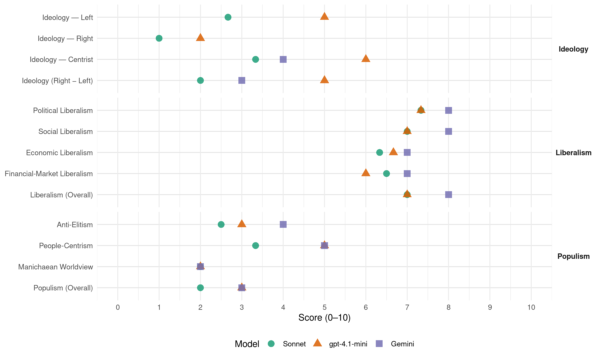

PI (Uruguay, 2014)
manifesto_id 162510_201410
Get full text: This site shows derived annotations and short verbatim quotes only. The full manifesto text is © Manifesto Project / WZB — obtain it via manifesto-project.wzb.eu using the manifesto_id above.
Headline scores
| Dimension | Sonnet | gpt-4.1-mini | Gemini |
|---|---|---|---|
| Populism (Overall) | 2.0 | 3.0 | 3.0 |
| Anti-Elitism | 2.5 | 3.0 | 4.0 |
| People-Centrism | 3.3 | 5.0 | 5.0 |
| Manichaean Worldview | 2.0 | 2.0 | 2.0 |
| Ideology (Right − Left) | 2.0 | 5.0 | 3.0 |
| Liberalism (Overall) | 7.0 | 7.0 | 8.0 |
| Political Liberalism | 7.3 | 7.3 | 8.0 |
| Social Liberalism | 7.0 | 7.0 | 8.0 |
| Economic Liberalism | 6.3 | 6.7 | 7.0 |
| Financial-Market Liberalism | 6.5 | 6.0 | 7.0 |
Evidence per dimension
Economic Liberalism
Gemini · score 7.0 · verified · chunk 1
“basado en la libertad económica”
un régimen de economía capitalista basado en la libertad económica pero con intervención estatal para
Gemini · score 7.0 · verified · chunk 2
“captar inversiones privadas importantes”
Plantear un esquema dinámico de financiamiento de los proyectos capaz de captar inversiones privadas importantes, profundizando lo desarrollado con las ERNC
Gemini · score 7.0 · verified · chunk 3
“crear centros de desarrollo empresarial”
múltiples instrumentos, como: 1) crear centros de desarrollo empresarial; 2) promover instrumentos de apoyo al emprendedurismo
gpt-4.1-mini · score 7.0 · verified · chunk 1
“competencia en los mercados”
El país necesita empresas privadas competitivas —bajo todas las formas societarias que la ley permite— y empresas públicas que presten servicios de buena calidad, de amplia cobertura y a precios competitivos. Para ello es preciso que exista competencia en los mercados, y las políticas públicas deben orientarse a la preservación de este valor social.
gpt-4.1-mini · score 7.0 · verified · chunk 2
“Es preciso desarrollar un esquema dinámico de financiamiento de los proyectos capaz de captar inversiones privadas importantes”
Plantear un esquema dinámico de financiamiento de los proyectos capaz de captar inversiones privadas importantes, profundizando lo desarrollado con las ERNC y extendiéndolo a otros proyectos de gran porte —centrales adicionales de ciclo combinado, por ejemplo—.
gpt-4.1-mini · score 6.0 · verified · chunk 3
“la negociación colectiva un ámbito poco operativo”
Esto en principio hace más compleja la negociación colectiva —ya que se deben negociar por separado las distintas familias ocupacionales—, pero una vez establecidos estos pisos y techos, los aumentos salariales que dispone el gobierno se hacen proporcionalmente a partir del salario inferior en la escala. Hoy en día las unidades ejecutoras negocian por separado con su ministerio y el MEF, según el peso corporativo que tengan, lo que hace de la negociación colectiva un ámbito poco operativo.
Sonnet · score 7.0 · verified · chunk 1
“economías más abiertas de forma sostenida”
La evidencia comparada muestra que las economías más abiertas de forma sostenida registran niveles de gasto público alto con relación al producto
Sonnet · score 6.0 · verified · chunk 2
“captación de inversiones privadas importantes”
Plantear un esquema dinámico de financiamiento de los proyectos capaz de captar inversiones privadas importantes, profundizando lo desarrollado con las ERNC
Sonnet · score 6.0 · verified · chunk 3
“promover clústeres y eslabonamientos productivos”
promover instrumentos de apoyo al emprendedurismo —incubadoras, aceleradoras, asistencia integral a emprendedores—; 3) promover clústeres y eslabonamientos productivos; 4) constituir redes de empresas
Financial-Market Liberalism
Gemini · score 7.0 · verified · chunk 1
“apertura al mercado de capitales”
empresas públicas y su apertura al mercado de capitales. El dragado en los canales
Gemini · score 7.0 · verified · chunk 2
“apertura al mercado de capitales”
Eventualmente incorporar la discusión del financiamiento de las empresas públicas y su apertura al mercado de capitales. La falta de un esquema institucional
Gemini · score 7.0 · verified · chunk 3
“DYNAPYME y Microfinanzas OPP”
incorporación de la figura de representantes territoriales de diversos programas nacionales: DYNAPYME y Microfinanzas OPP. Sin embargo, hasta el presente no se observa
gpt-4.1-mini · score 6.0 · verified · chunk 1
“grado inversor, lo que lo habilita a acceder a financiamiento externo”
Uruguay salió de la crisis del año 2002 al borde del default y diez años después alcanzó el grado inversor, lo que lo habilita a acceder a financiamiento externo en condiciones muy competitivas. Ambas políticas, junto con la no reversión en la orientación general de la apertura económica, intensificó el proceso de inversión, y en particular hubo éxito en materia de inversión extranjera directa.
gpt-4.1-mini · score 6.0 · verified · chunk 2
“discutir el financiamiento de las empresas públicas y su apertura al mercado de capitales”
Eventualmente incorporar la discusión del financiamiento de las empresas públicas y su apertura al mercado de capitales. La falta de un esquema institucional claro para la captación de inversiones privadas hace temer una fuerte recurrencia a las inversiones públicas con apoyo en la cuenta fiscal.
Sonnet · score 7.0 · verified · chunk 1
“liberalización financiera, la continuidad que se verifica”
En materia de liberalización financiera, la continuidad que se verifica es también uno de los componentes de la inserción internacional
Sonnet · score 6.0 · verified · chunk 2
“apertura al mercado de capitales”
Eventualmente incorporar la discusión del financiamiento de las empresas públicas y su apertura al mercado de capitales
Political Liberalism
Gemini · score 8.0 · verified · chunk 1
“democrático y pluralista”
equitativo, republicano y políticamente democrático y pluralista. Justamente, la propuesta que aquí
Gemini · score 8.0 · verified · chunk 2
“potenciar sin concesiones ni debilidades al Estado democrático”
es precisamente en esta época que debemos potenciar sin concesiones ni debilidades al Estado democrático ante las pretensiones de las formas autoritarias
Gemini · score 8.0 · verified · chunk 3
“fortalecimiento de la democracia”
servicios, y c) el desarrollo de la ciudadanía y el fortalecimiento de la democracia. La simplificación de trámites se debe encarar
gpt-4.1-mini · score 7.0 · verified · chunk 1
“la democracia practicada en forma directa”
Esto únicamente puede conseguirse preservando la presencia partidaria en aquellos ámbitos de actuación popular. En ese sentido, lo que aquí ofrecemos es nuestro programa partidario expresado en un conjunto de pautas generales y propuestas concretas sobre los diferentes campos de nuestra vida en sociedad. Ellas expresan nuestras convicciones y apuestas para nuestro país, con la esperanza de que inviten a la ciudadanía a convertirse en agente activo de la generación de la casa común. Tal es la forma como nuestro partido concibe a la República, es decir, el ámbito donde los habitantes procuran su libre realización individual y familiar en condiciones materiales lo más igualitarias posible, para lo cual es imprescindible la presencia y la colaboración estatal. No solamente por razones de justicia, sino también para hacer efectivo el funcionamiento de la democracia. Podemos tener un futuro excepcional Se requiere un gobierno capaz de afrontar ese desafío con ideas nuevas, libres de viejos prejuicios y modos de pensamiento heredados del siglo XIX.
gpt-4.1-mini · score 7.0 · verified · chunk 2
“Potenciar al Tribunal de Cuentas para hacer controles de gestión”
Cuanto más fragmentado y complejo sea el sector público, más potente debe ser la capacidad de coordinación de los centros de gobierno, entre sí y con los distintos organismos públicos, semipúblicos y privados que están involucrados en una política pública. Potenciar al Tribunal de Cuentas para hacer controles de gestión de los organismos públicos.
gpt-4.1-mini · score 8.0 · verified · chunk 3
“la rendición clara de cuentas al Parlamento”
El procesamiento de la información sobre la base de programas presupuestales basados en productos mejora notablemente la rendición clara de cuentas al Parlamento —el presupuesto basado en insumos no es una herramienta apta para ejercer un control sustantivo del gasto público—, pero también mejora la rendición de cuentas de los ministros al presidente de la República y ayuda a monitorear las prioridades presidenciales.
Sonnet · score 8.0 · verified · chunk 1
“instauración de un régimen parlamentarista favorecería”
la instauración de un régimen parlamentarista favorecería significativamente la consolidación de una cultura política fundada en acuerdos y entendimientos plurales
Sonnet · score 7.0 · verified · chunk 2
“potenciar sin concesiones al Estado democrático”
debemos potenciar sin concesiones ni debilidades al Estado democrático ante las pretensiones de las formas autoritarias y totalitarias
Sonnet · score 7.0 · verified · chunk 3
“fortalecimiento de la democracia”
c) el desarrollo de la ciudadanía y el fortalecimiento de la democracia. La simplificación de trámites se debe encarar como una tarea del conjunto
Liberalism (Overall)
Gemini · score 8.0 · verified · chunk 1
“democrático y pluralista”
equitativo, republicano y políticamente democrático y pluralista. Justamente, la propuesta que aquí
Gemini · score 8.0 · verified · chunk 2
“potenciar sin concesiones ni debilidades al Estado democrático”
es precisamente en esta época que debemos potenciar sin concesiones ni debilidades al Estado democrático ante las pretensiones de las formas autoritarias
Gemini · score 8.0 · verified · chunk 3
“fortalecimiento de la democracia”
servicios, y c) el desarrollo de la ciudadanía y el fortalecimiento de la democracia. La simplificación de trámites se debe encarar
gpt-4.1-mini · score 7.0 · verified · chunk 1
“competencia en los mercados”
El país necesita empresas privadas competitivas —bajo todas las formas societarias que la ley permite— y empresas públicas que presten servicios de buena calidad, de amplia cobertura y a precios competitivos. Para ello es preciso que exista competencia en los mercados, y las políticas públicas deben orientarse a la preservación de este valor social.
gpt-4.1-mini · score 7.0 · verified · chunk 2
“Potenciar al Tribunal de Cuentas para hacer controles de gestión”
Cuanto más fragmentado y complejo sea el sector público, más potente debe ser la capacidad de coordinación de los centros de gobierno, entre sí y con los distintos organismos públicos, semipúblicos y privados que están involucrados en una política pública. Potenciar al Tribunal de Cuentas para hacer controles de gestión de los organismos públicos.
gpt-4.1-mini · score 7.0 · verified · chunk 3
“la rendición clara de cuentas al Parlamento”
El procesamiento de la información sobre la base de programas presupuestales basados en productos mejora notablemente la rendición clara de cuentas al Parlamento —el presupuesto basado en insumos no es una herramienta apta para ejercer un control sustantivo del gasto público—, pero también mejora la rendición de cuentas de los ministros al presidente de la República y ayuda a monitorear las prioridades presidenciales.
Sonnet · score 7.0 · verified · chunk 1
“libertad económica pero con intervención estatal”
un régimen de economía capitalista basado en la libertad económica pero con intervención estatal para incentivar, corregir o superar las fallas e imperfecciones del mercado
Sonnet · score 7.0 · verified · chunk 2
“potenciar sin concesiones al Estado democrático”
debemos potenciar sin concesiones ni debilidades al Estado democrático ante las pretensiones de las formas autoritarias y totalitarias
Sonnet · score 7.0 · verified · chunk 3
“fortalecimiento de la democracia”
c) el desarrollo de la ciudadanía y el fortalecimiento de la democracia. La simplificación de trámites se debe encarar como una tarea del conjunto
Anti-Elitism
Gemini · score 4.0 · verified · chunk 1
“minorías elitistas altamente formadas”
El resultado será una sociedad con minorías elitistas altamente formadas, inmersas culturalmente en un pueblo
gpt-4.1-mini · score 3.0 · verified · chunk 1
“superar las tendencias corporativistas”
La construcción de un país próspero y solidario implica reivindicar la importancia del esfuerzo y la responsabilidad de los ciudadanos comunes, aquellos que viven de su trabajo, cumplen sus obligaciones y carecen de respaldos específicos que les permitan obtener resultados particularistas. Esto implica que es necesario superar las tendencias corporativistas y ubicar la reivindicación de los intereses particulares dentro del marco más general de articulación de los intereses generales de nuestra sociedad.
Sonnet · score 4.0 · mixed · chunk 1
“viejas fórmulas en las que un comité de sabios elaboraba una propuesta”
convencido de que las viejas fórmulas en las que un comité de sabios elaboraba una propuesta para que luego la ciudadanía la acompañara no constituye la mejor manera
Sonnet · score 3.0 · verified · chunk 2
“facilismo demagógico de victimizar a los infractores”
Se llegó incluso a caer en el facilismo demagógico de victimizar a los infractores y facilitar su “fuga” sistemática, incumpliendo las decisiones judiciales
Sonnet · score 2.0 · verified · chunk 3
“peso corporativo que tengan”
según el peso corporativo que tengan, lo que hace de la negociación colectiva un ámbito poco operativo
Ideology — Centrist
Gemini · score 4.0 · verified · chunk 1
“responsabilidad de los ciudadanos comunes”
reivindicar la importancia del esfuerzo y la responsabilidad de los ciudadanos comunes, aquellos que viven de su
gpt-4.1-mini · score 6.0 · verified · chunk 1
“una constante incitación a la colaboración de todos”
Este modo de considerar la política como una constante incitación a la colaboración de todos en la generación de una ciudadanía común es el que caracteriza al Partido Independiente, convencido de que las viejas fórmulas en las que un comité de sabios elaboraba una propuesta para que luego la ciudadanía la acompañara no constituye la mejor manera de considerar la política en el mundo moderno.
Sonnet · score 5.0 · verified · chunk 1
“acuerdos y entendimientos plurales”
la consolidación de una cultura política fundada en acuerdos y entendimientos plurales
Sonnet · score 3.0 · verified · chunk 2
“Partido Independiente propone su visión de cómo organizar el Estado”
Por esta razón el Partido Independiente propone su visión de cómo organizar el Estado para que permita el ejercicio del buen gobierno
Sonnet · score 2.0 · verified · chunk 3
“acuerdo de todos los partidos políticos”
fruto del acuerdo de todos los partidos políticos, ha reafirmado políticas de inserción social de los adolescentes infractores
Ideology — Left
gpt-4.1-mini · score 5.0 · verified · chunk 1
“un fuerte componente de justicia social”
Esta misma filosofía económica encierra, como adelantamos, un fuerte componente de justicia social, atendiendo a que esta, junto con el mantenimiento de la paz y la seguridad internas y externas, constituye los fundamentos últimos de la existencia del Estado.
Sonnet · score 4.0 · verified · chunk 1
“liberalismo igualitarista, en lo que también se ha denominado un liberalismo social”
el Partido Independiente se sitúa en un espacio común compartido por la socialdemocracia, ciertas corrientes del socialcristianismo y el liberalismo igualitarista, en lo que también se ha denominado un liberalismo social
Sonnet · score 2.0 · verified · chunk 2
“equidad interna y del bienestar colectivo no es sustentable”
la mejora de la equidad interna y del bienestar colectivo no es sustentable. Se carece de los recursos y también de los incentivos para mejorar la distribución
Sonnet · score 2.0 · verified · chunk 3
“integración de los sectores sociales más deprimidos”
será necesario un esfuerzo importante de integración de los sectores sociales más deprimidos
Ideology (Right − Left)
Gemini · score 3.0 · verified · chunk 1
“responsabilidad de los ciudadanos comunes”
reivindicar la importancia del esfuerzo y la responsabilidad de los ciudadanos comunes, aquellos que viven de su
gpt-4.1-mini · score 5.0 · verified · chunk 1
“un espacio común compartido por la socialdemocracia”
Por último, en lo referido a su posicionamiento ideológico, el Partido Independiente se sitúa en un espacio común compartido por la socialdemocracia, ciertas corrientes del socialcristianismo y el liberalismo igualitarista, en lo que también se ha denominado un liberalismo social o de izquierda.
Sonnet · score 3.0 · mixed · chunk 1
“socialdemocracia, ciertas corrientes del socialcristianismo”
el Partido Independiente se sitúa en un espacio común compartido por la socialdemocracia, ciertas corrientes del socialcristianismo y el liberalismo igualitarista
Sonnet · score 2.0 · verified · chunk 2
“Partido Independiente propone su visión de cómo organizar el Estado”
el Partido Independiente propone su visión de cómo organizar el Estado para que permita el ejercicio del buen gobierno
Sonnet · score 2.0 · verified · chunk 3
“peso corporativo que tengan”
según el peso corporativo que tengan, lo que hace de la negociación colectiva un ámbito poco operativo
Ideology — Right
gpt-4.1-mini · score 2.0 · verified · chunk 1
“nacionalismo económico característico de los nuevos populismos”
El nacionalismo económico característico de los nuevos populismos en América del Sur ha sido el principal enemigo del proceso de integración que se venía transitando tanto en la Comunidad Andina como en el Mercosur hasta finales del siglo pasado.
Sonnet · score 1.0 · verified · chunk 1
“nacionalismo económico característico de los nuevos populismos”
El nacionalismo económico característico de los nuevos populismos en América del Sur ha sido el principal enemigo del proceso de integración
Sonnet · score 1.0 · verified · chunk 2
“formas autoritarias y totalitarias que lo amenazan”
debemos potenciar sin concesiones ni debilidades al Estado democrático ante las pretensiones de las formas autoritarias y totalitarias que lo amenazan
Sonnet · score 1.0 · verified · chunk 3
“defensa de la soberanía, la independencia y la integridad territorial”
cuya institucionalidad se vincula con la defensa de la soberanía, la independencia y la integridad territorial
Manichaean Worldview
Gemini · score 2.0 · verified · chunk 1
“Esta dicotomía maniqueísta ha supuesto”
en la oposición. Esta dicotomía maniqueísta ha supuesto un creciente empobrecimiento del debate
gpt-4.1-mini · score 2.0 · verified · chunk 1
“Esta fractura que tiende a ensancharse”
En este sentido, si bien el crecimiento económico ha sido notorio, como también lo fueron el descenso en las tasas de pobreza e indigencia, este mejoramiento no fue acompañado por un proceso acorde de integración social. El Uruguay está dividido socialmente entre una gran mayoría alineada con las pautas generales de nuestra cultura como nación, construida y sostenida en largas décadas de acumulación, y una minoría que vive ajena a los valores y las formas de pensamiento de la mayoría. Por ende, esta minoría cultiva formas de vida diferentes, con conductas, aspiraciones y visiones del futuro distintas de las del resto de la población. Esta fractura que tiende a ensancharse, pese a la mejoría económica, ajena en gran medida al desarrollo económico y a las propias condiciones sociales, supone un grave problema para el país y constituye el factor más gravitante en la situación de inseguridad frente al delito en que vivimos.
Sonnet · score 3.0 · verified · chunk 1
“dicotomía maniqueísta ha supuesto un creciente empobrecimiento”
Esta dicotomía maniqueísta ha supuesto un creciente empobrecimiento del debate y de la discusión política que impide la posibilidad de entendimientos amplios
Sonnet · score 2.0 · verified · chunk 2
“demagogia, que se quiso justificar con interpretaciones ideologizadas”
Esa demagogia, que se quiso justificar con interpretaciones ideologizadas, aparentemente de izquierda y de avanzada, motivó la reacción de signo opuesto
Sonnet · score 1.0 · verified · chunk 3
“orientación ideológica que interpretaba las manifestaciones delictivas”
la acción del Ministerio del Interior estuvo condicionada por una orientación ideológica que interpretaba las manifestaciones delictivas como una consecuencia de la exclusión social
People-Centrism
Gemini · score 5.0 · verified · chunk 1
“responsabilidad de los ciudadanos comunes”
reivindicar la importancia del esfuerzo y la responsabilidad de los ciudadanos comunes, aquellos que viven de su
gpt-4.1-mini · score 5.0 · verified · chunk 1
“la ciudadanía a convertirse en agente activo de la generación de la casa común”
Ellas expresan nuestras convicciones y apuestas para nuestro país, con la esperanza de que inviten a la ciudadanía a convertirse en agente activo de la generación de la casa común. Tal es la forma como nuestro partido concibe a la República, es decir, el ámbito donde los habitantes procuran su libre realización individual y familiar en condiciones materiales lo más igualitarias posible, para lo cual es imprescindible la presencia y la colaboración estatal.
Sonnet · score 5.0 · verified · chunk 1
“ciudadanos comunes, aquellos que viven de su trabajo”
reivindicar la importancia del esfuerzo y la responsabilidad de los ciudadanos comunes, aquellos que viven de su trabajo, cumplen sus obligaciones
Sonnet · score 2.0 · verified · chunk 2
“al servicio de la gente y del bien común”
donde se concreta la orientación del Estado al servicio de la gente y del bien común
Sonnet · score 3.0 · verified · chunk 3
“acercamiento de los servicios públicos a la ciudadanía”
c. El acercamiento de los servicios públicos a la ciudadanía Este componente de la reforma del Estado no solo es valioso como instrumento de construcción de ciudadanía
Populism (Overall)
Gemini · score 3.0 · verified · chunk 1
“Esta dicotomía maniqueísta ha supuesto”
en la oposición. Esta dicotomía maniqueísta ha supuesto un creciente empobrecimiento del debate
gpt-4.1-mini · score 3.0 · verified · chunk 1
“superar las tendencias corporativistas”
La construcción de un país próspero y solidario implica reivindicar la importancia del esfuerzo y la responsabilidad de los ciudadanos comunes, aquellos que viven de su trabajo, cumplen sus obligaciones y carecen de respaldos específicos que les permitan obtener resultados particularistas. Esto implica que es necesario superar las tendencias corporativistas y ubicar la reivindicación de los intereses particulares dentro del marco más general de articulación de los intereses generales de nuestra sociedad.
Sonnet · score 4.0 · mixed · chunk 1
“ciudadanos comunes, aquellos que viven de su trabajo”
reivindicar la importancia del esfuerzo y la responsabilidad de los ciudadanos comunes, aquellos que viven de su trabajo, cumplen sus obligaciones
Sonnet · score 2.0 · verified · chunk 2
“facilismo demagógico de victimizar a los infractores”
Se llegó incluso a caer en el facilismo demagógico de victimizar a los infractores y facilitar su “fuga” sistemática
Sonnet · score 2.0 · verified · chunk 3
“peso corporativo que tengan”
según el peso corporativo que tengan, lo que hace de la negociación colectiva un ámbito poco operativo
Social Liberalism